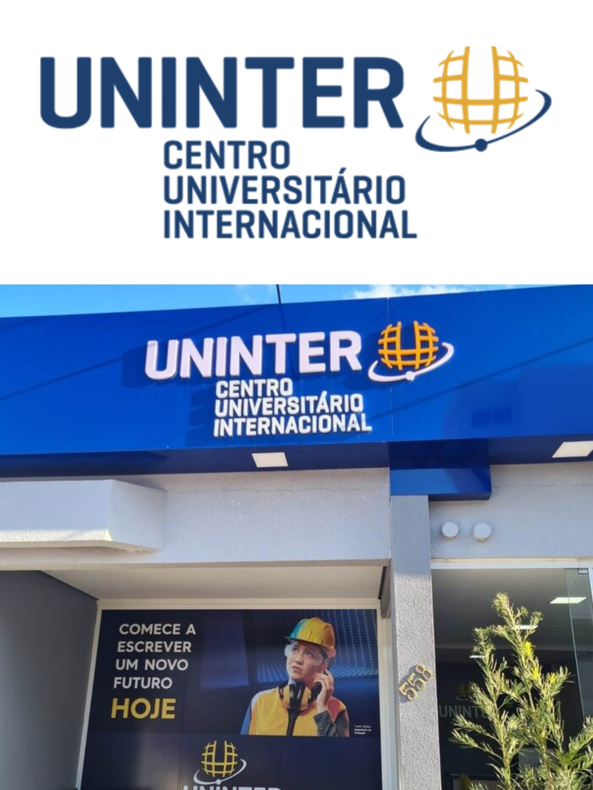

Formação Acadêmica
- UNINTER - Análise e Desenvolvimento de Sistemas (Outubro/2023 - conclusão esperada Abril/2026)
- 42 École – Engenharia de Software (Julho/2023 - Fevereiro/2024)
Idiomas
- Português: Nativo
- Inglês: Avançado
Experiência profissional
Solidaris Saúde Para Todos. Rio de Janeiro, Brasil
- Assistente Financeiro – Agosto/2022 a Outubro/2023.
- Recepcionista – Setembro/2021 a Agosto/2022